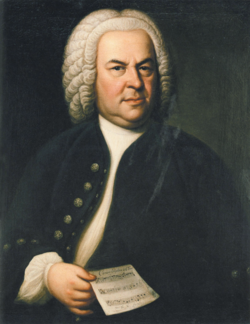
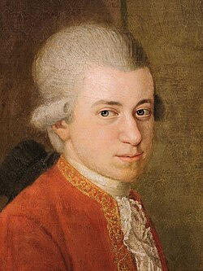
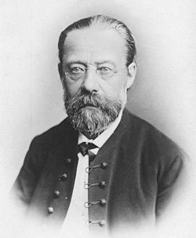
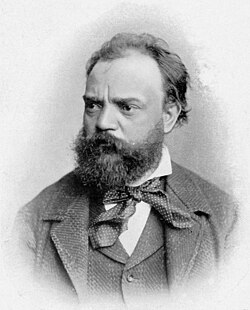

|  | JOHANN SEBASTIAN BACH - Ve své době Bach proslul především jako hráč na klávesové nástroje, improvizátor a znalec varhan, jako hudební skladatel však byl znám méně. Jeho hudba byla vnímána jako konzervativní a po jeho smrti upadla na padesát let téměř v zapomenutí. Až počínaje Felixem Mendelssohnem Bartholdym se od první poloviny 19. století začala postupně opět více hrát.
|
|  | WOLFGAMG AMADEUS MOZART - Ve svém dětství koncertoval po celé Evropě. Poté, co opustil pozici dvorního skladatele v Salcburku, nenalezl již přes svou proslulost stálé placené místo pro zajištění existence své rodiny. Často cestoval a byl neustále v dluzích. Nechtěl sloužit jako lokaj aristokratické společnosti a přál si zůstat svobodným umělcem. Mezi jeho nejproslulejší díla se řadí opery Figarova svatba a Don Giovanni a jeho poslední monumentální, i když nedokončený, opus zádušní mše Requiem d moll. |
|  | BEDŘICH SMETANA - Pocházel z poměrně zámožné, do určité míry poněmčené sládkovské rodiny. Od raného mládí se věnoval hudbě, zejména hře na klavír a kompozici. Po studiu u Josefa Proksche působil od roku 1847 v Praze jako koncertní klavírista a hudební pedagog. V letech 1856–1861 pobýval jako dirigent a učitel hudby ve švédském Göteborgu. Po návratu do Prahy se mnohostranně zapojil do českého společenského a kulturního života, a to i jako hudební kritik, jako první kapelník Prozatímního divadla v letech 1866–1874, avšak zejména jako operní skladatel. V padesáti letech věku zcela ohluchl, ale i po ztrátě sluchu dokázal složit řadu vrcholných děl. |
|  | ANTONÍN DVOŘÁK - Dvořákova symfonická a koncertantní díla jsou tradiční součástí repertoáru významných orchestrů po celém světě.Proslavil se symfoniemi, nástrojovými koncerty a velkými vokálně-instrumentálními skladbami, neméně však i komorní hudbou a operami. Dvořák byl spolu s Bedřichem Smetanou průkopníkem novodobé české hudby v linii vrcholného romantismu.
|